The GHCi Debugger has a :print command that inspects data structures at runtime. Evaluation is not forced, so there are no side effects.
$ ghci GHCi, version 7.4.2: http://www.haskell.org/ghc/ :? for help λ> let a = [1..3] λ> :print a a = (_t1::[Integer]) λ> head a 1 λ> :print a a = 1 : (_t2::[Integer]) λ> head $ tail a 2 λ> :print a a = 1 : 2 : (_t3::[Integer]) λ> a [1,2,3] λ> :print a a = [1,2,3] λ> let b = a ++ a λ> head b 1 λ> :print b b = 1 : (_t3::[Integer]) λ> b [1,2,3,1,2,3] λ> :print b b = [1,2,3,1,2,3]
These data structures reside on the GHC heap. We can see that expressions are only evaluated once they are needed. This is called lazy evaluation. To avoid unnecessary copies of objects on the heap a heap object can be referenced multiple times instead of being copied into a new location. This is called sharing. We can see that :print does not tell us how b is sharing values with a or within itself.
Vacuum-cairo on the other hand does tell us how values are shared within b:
λ> System.Vacuum.Cairo.view b
The following window appears on the screen:
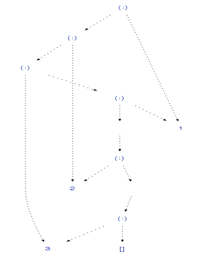
But vacuum-cairo evaluates the data structure fully before showing it. So we can't use it to see how data structures are lazily evaluated in Haskell.
Additionally Vacuum-cairo is unable to visualize sharing between different data structures, like a and b in this case, as only one data structure can be viewed at any time. We would have to combine the data structures into one to see which values are referenced in both.
When we use vacuum (and vacuum-graphviz) directly we can inspect data structures without evaluating them:
λ> let a = "foo"
λ> let b = a ++ a
λ> head b
'f'
λ> GHC.Vacuum.GraphViz.graphToDotFile "vacuum2" Data.GraphViz.Commands.Png $ GHC.Vacuum.nameGraph (GHC.Vacuum.vacuumLazy (a,b))
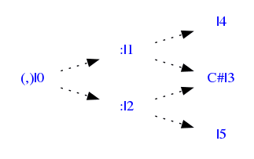
We can see that the value "C#l3" is referenced both in a and b. That's the 'f'. What we can't see is that the l5 thunk references a and has another value shared with a.
What we'd like to see is something like this, which is what ghc-vis outputs:
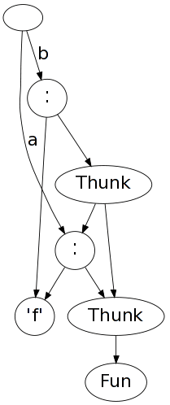
ghc-vis is a tool to visualize live Haskell data structures in GHCi. Evaluation is not forced and you can interact with the visualized data structures. This allows seeing Haskell's lazy evaluation and sharing in action.
The package is available on Hackage. Install it like this:
$ cabal update $ cabal install gtk2hs-buildtools $ cabal install --disable-library-profiling ghc-vis $ echo ":script $HOME/.cabal/share/ghc-vis-0.3.1/ghci" >> ~/.ghci
Now you can run ghci and experiment with ghc-vis. Start the visualization:
$ ghci GHCi, version 7.4.2: http://www.haskell.org/ghc/ :? for help λ> :vis
A blank window should appear now. This is the visualization window. Add an expression to the visualization:
λ> let a = [1..3] λ> :view a λ> let b = cycle a λ> :view b λ> :view "foo" ++ "bar"
You should now see something similar to this:
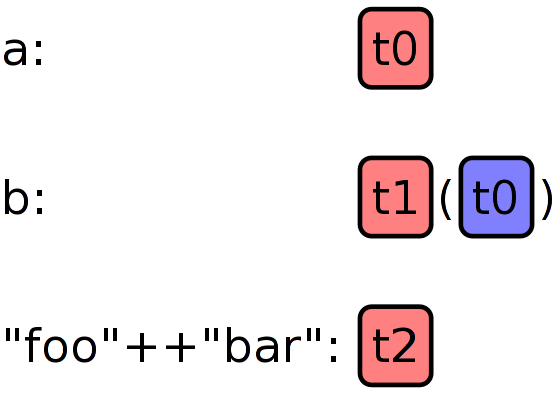
Functions are red, named objects are green and links to an already shown object are blue.
Notice how a is referenced by b.
Evaluate an object that is shown in the visualization. You can also click on the object to evaluate it.
λ> :eval t1
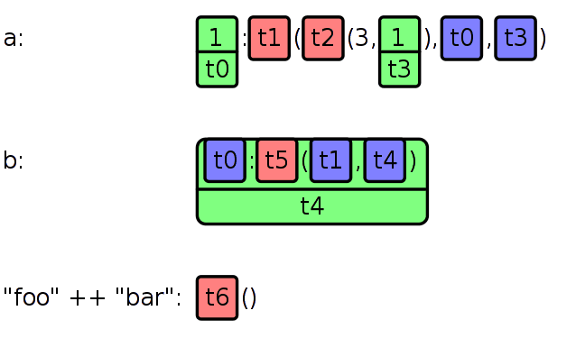
The first element of b has been evaluated. We see that it's a reference to the value that's also referenced in a, as they share the same name "t0".
Switch between the list view and the graph view:
λ> :switch
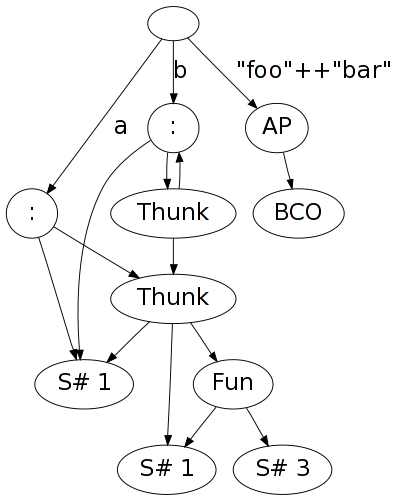
When an object is updated by accessing it, you have to call :update to refresh the visualization window. You can also click on an object to force an update:
λ> a !! 2 3 λ> :update
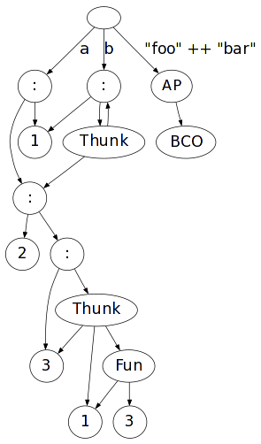
Clear the visualization window, this also happens when you :load or :reload a source file:
λ> :clear
λ> let l = [1,2,3] λ> :view l λ> let l2 = 4:l λ> :view l2 λ> let x = l ++ l2 λ> :view x λ> let y = id (:) () y λ> :view y λ> :eval t3 λ> :switch
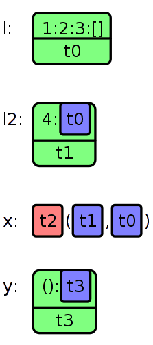
λ> data BinaryTree = BT BinaryTree Int BinaryTree | Leaf λ> let x = BT (BT (BT Leaf 1 (BT Leaf 2 Leaf)) 3 (BT (BT Leaf 4 (BT Leaf 5 Leaf)) 6 Leaf)) 7 Leaf λ> :view x λ> :switch
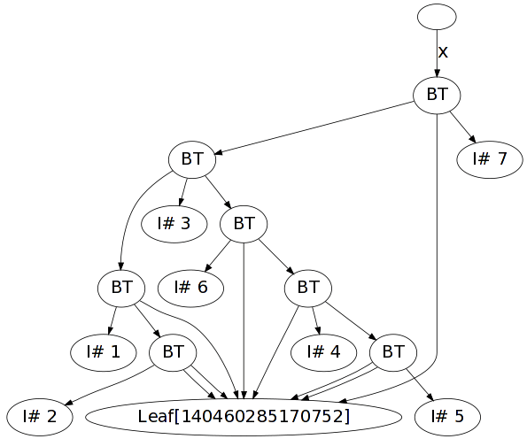
A working cyclic double linked list: dll.hs
λ> :l dll.hs λ> let x = mkDList [1..4] λ> :view x λ> :switch
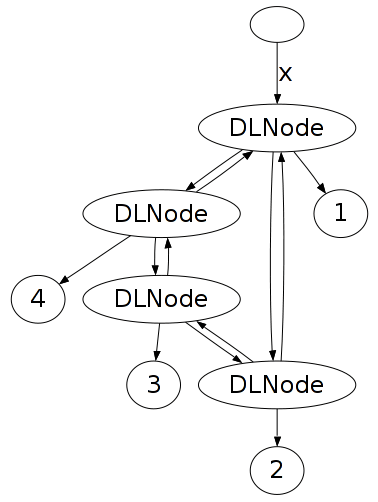
A non-working cyclic double linked list: dll2.hs New list elements get created all the time instead of referencing the existing ones.
λ> :l dll2.hs λ> let x = mkDList [1..4] λ> :view x λ> :switch
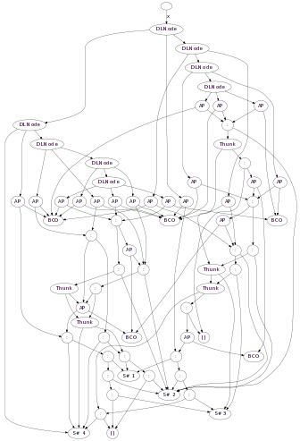
λ> :l dfa.hs λ> :view dom18 λ> :switch
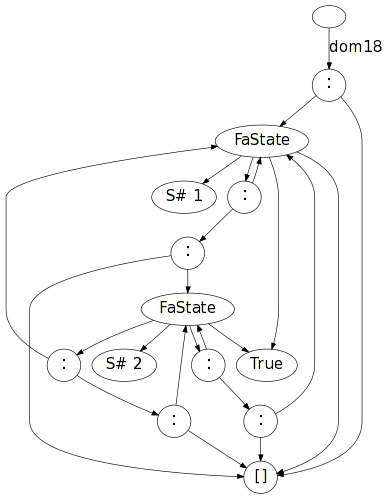
λ> :view (Data.IntMap.fromList $ zip [1..10] [1..]) λ> :eval t0 λ> :switch
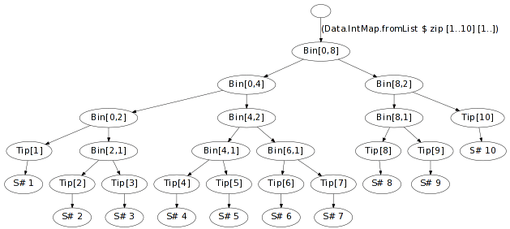
λ> let a = Data.ByteString.pack [0x44,0x45,0x46] λ> :view a λ> let b = Data.ByteString.append a a λ> :view b λ> :switch λ> a "DEF" λ> :update
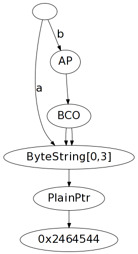
λ> let b = GHC.Arr.array ((1,1),(3,2)) [((1,1),42),((1,2),23),((2,1),999),((2,2),1000),((3,1),1001),((3,2),1002)] λ> b array ((1,1),(3,2)) [((1,1),42),((1,2),23),((2,1),999),((2,2),1000),((3,1),1001),((3,2),1002)] λ> :view b λ> :switch
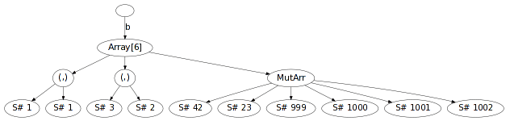
ghc-vis can be used to watch data structures while a computation is inspected using GHCi's debugger:
Download Video: debugger.mp4, debugger.webm
Although ghc-vis is meant to be used in GHCi it can also be used as a library in regular Haskell programs which are run or compiled by GHC. You can run those programs using "runghc example.hs" or "ghc -threaded example.hs && ./example". Without the "-threaded"-Flag ghc-vis does not work correctly. This is an example using ghc-vis outside of GHCi:
import GHC.Vis main = do let a = "teeest" let b = [1..3] let c = b ++ b let d = [1..] putStrLn $ show $ d !! 1 visualization view a "a" view b "b" view c "c" view d "d" getChar switch getChar
If you have any problems, new ideas or comments concerning ghc-vis, just drop me an email: dennis@felsin9.de. I'll be glad to help you.